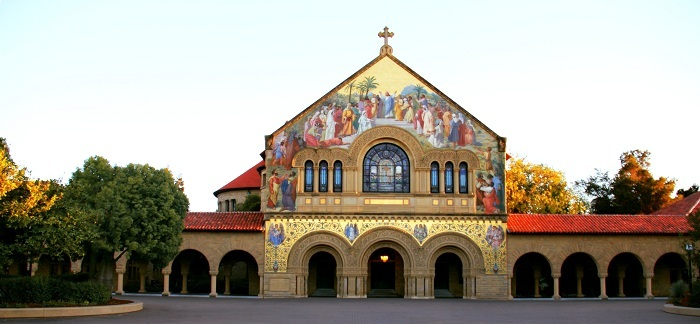

-
Chinese Career Opportunities
Stanford University is a leading university in the US and worldwide. Every year hundreds of talented Chinese students graduate from here ready to start their career back in China. Under the aegis of the Association of Chinese Students and Scholars at Stanford (ACSSS), Career Ch!na will launch the inaugural Chinese Company Career Fair at Stanford in November this year.

-
Chinese Career Opportunities
Stanford University is a leading university in the US and worldwide. Every year hundreds of talented Chinese students graduate from here ready to start their career back in China. Under the aegis of the Association of Chinese Students and Scholars at Stanford (ACSSS), Career Ch!na will launch the inaugural Chinese Company Career Fair at Stanford in November this year.
-
Who We Are
Career Ch!na, an innovative project initiated by a group of Stanford students, aims to bridge the gap between Chinese enterprises and Chinese students studying in the US who are interested in pursuing a career back home. We are inviting industry leaders from China to our well-organized Career Fair at Stanford University in spring of 2013. This great opportunity is open to all students in the US, though we have a focus on Chinese students from universities in California.
What We Do
To help China-based enterprises or local companies with plans to expand China market reach the prospective talent in top US universities. We devote ourselves to providing our clients with a unique, effective, and rapid alternative to traditional overseas talent sourcing. Conventionally recruiters post their positions on internet sites, then wait for the right candidate happens to find the job listing and to apply. We attempt to replace this ineffective and reactive recruiting precess with our proactive solutions through building direct connection between our client companies and the potential candidates, marketing your brand to enthusiastic and bilingual fresh graduates with cross-cultural background and right skill set. For more detailed introduction of our clients' benefits, please see our strengths.
To help Chinese students at Stanford and other great universities in California seek better career opportunities back in China. According to our survey, there are 75.86% Chinese students from established universities in California are interested in going back to China for job opportunities after graduation. At present students look for job opportunities in China either by personal connections or through general job search sites; however, various factors including remote communication, inadequate information, time difference, drive our students to be searching for a more effective way in their job hunting, no matter how talented and qualified they are. Therefore we aim to offer a platform where our students can actively meet, communicate with, and impress their future employers from China in a short period of time.
How We Do
Career Ch!na is designed to hold a Western style career fair this year on the Stanford campus where, by our invitation, the first class companies from China will market their brand overseas, have face-to-face communication with promising students from all majors, and recruit future employees with right skills. The flow of Career Ch!na Career Fair 2013 is as below:
Marketing and Publicity
We implement a well-designed marketing strategic plan, and our career fair publicity covers the entire Stanford Chinese student community, including undergrads, master's, PhDs, and research scholars. As our partner, Stanford's Career Development Center (CDC) will post all our activities on its official, high-traffic website open to Stanford students. We also receive strong support from our partner schools in California, which ensures Chinese students in those schools are kept updated on our Career Fair.
In addition, we reach out experienced Chinese employees who have been working in Silicon Valley for a number of years and who are interested in work opportunities back in China
Registration
If you are interested in attending our Career Fair, please contact us at careerchinastanford@gmail.com. We will send you our information package in which you can find relevant information of our schedule, optional sessions, accommodation, and cost. We will follow up by email or phone, and finalize our employer list. After confirming your attendance, we will send you the formal invitation letter.
Reception and Information Session
We will hold an evening reception/information session before our Career Fair Day. At the evening reception, we will prepare snacks and drinks for employers and students, and offer a great occasion for them to meet, mingle, and network with each other. It will then be followed by an info session where limited number of companies can have the opportunities to introduce and market their business to students through presentation and Q&A. It is an optional activity and we highly recommend you come (no extra fee will be charged).
Career Fair Day
The Career Fair will be held on March 2nd, 2013. Each attending company will be provided with at least one exhibition desk (extra fee will be charged for additional desks). Students will interact with you in a face-to-face fashion with their prepared resume/CV. The Career Fair will last for a whole day from 10am to 4pm, and the venue map, list of participating companies, and other relevant materials will be prepared beforehand.
Airport Pick-up, Lodging and Touring
We are well aware of your logistical concerns as vistors from China and we try our best to accommodate your needs. We can provide optional Logistical Service Package which includes airport pick-up, lodging, Stanford campus tour, per your request.
Target Industries and Participate Universities
We target companies in certain industries and focus on students from top US universities in California
Industries Consulting Civil and Environmental Engineering Design Electrical Engineering Finance and Banking Food Industry Information Technology Materials & Chemistry Media & Advertising Medicine & Biology New Energy Research Institutions and Higher Education Start-up and Business Incubator Participate Universities Stanford University University of California, Berkeley California Institute of Technology (Caltech) University of California, Los Angeles University of California, San Diego University of California, Davis University of California, Santa Babara University of Southern California (USC)